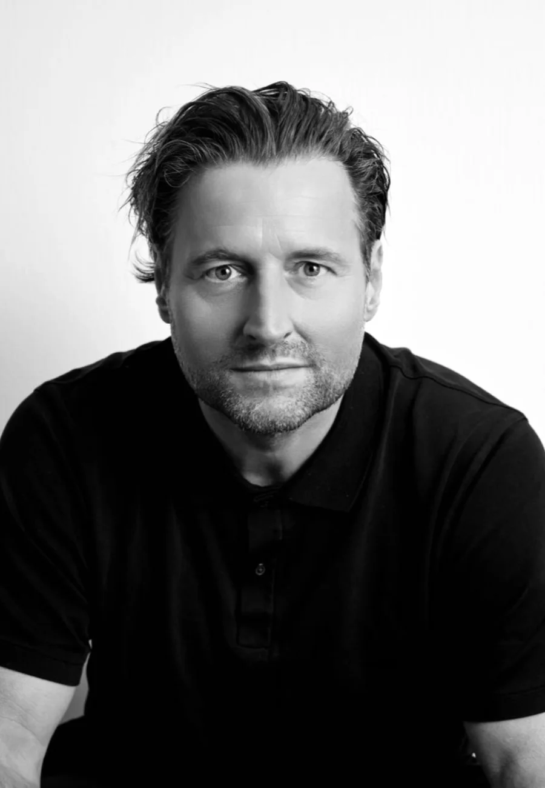

Van het toneel van De Toneelmakerij tot de hoofdrol in Zomer in Frankrijk.
Tjebbo Gerritsma (1972) studeerde in 1999 af aan de Toneelschool Amsterdam. Sindsdien speelt hij op het toneel, in films en in televisieseries.
Naast het spel is zijn stem een vak apart: hij is veel te horen in voice-overs, commercials en nasynchronisaties.
Jarenlang hoorde hij bij de vaste kern van De Toneelmakerij, als speler en als maker. In musicals als Annie en Anatevka liet hij horen dat hij ook kan zingen. Op het scherm was hij te zien in onder meer Zwartboek, Riphagen, Bankier van het Verzet en de series Smeris, Toren C en Judas.
Een selectie. Volledige lijst en actuele projecten via het agentschap.
Commercials, animatie, documentaire en luisterboek. Eén stem, veel registers.
Tjebbo wordt vertegenwoordigd door All Stars Agency. Voor boekingen, castings en beschikbaarheid kunt u daar terecht.
All Stars Agency